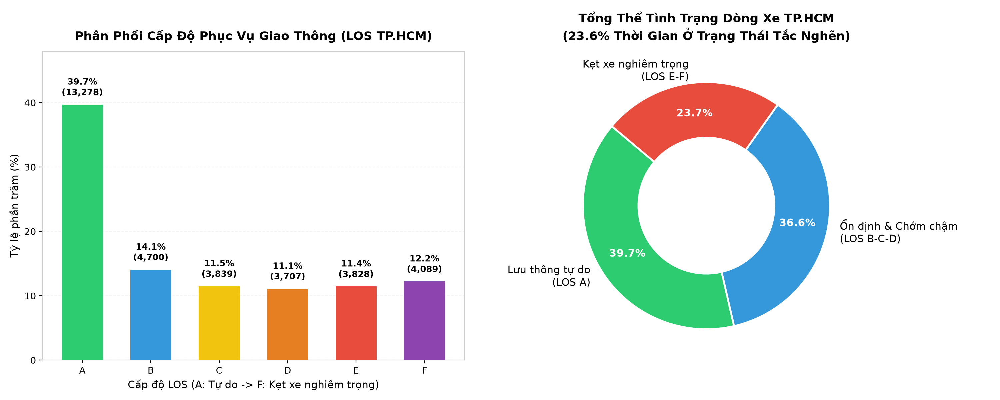
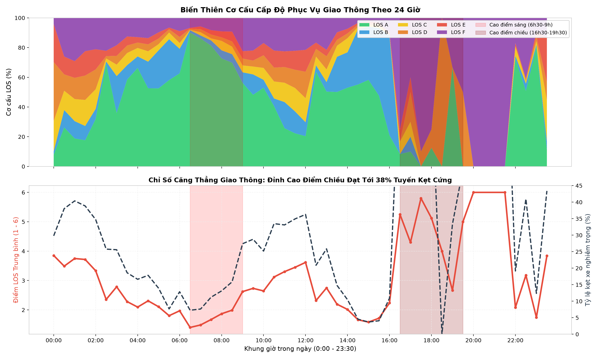
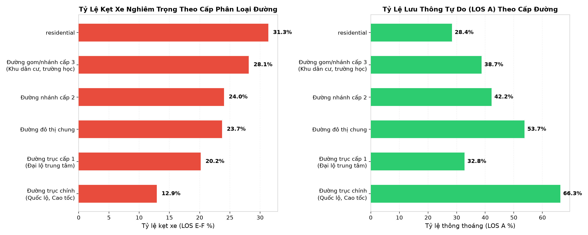
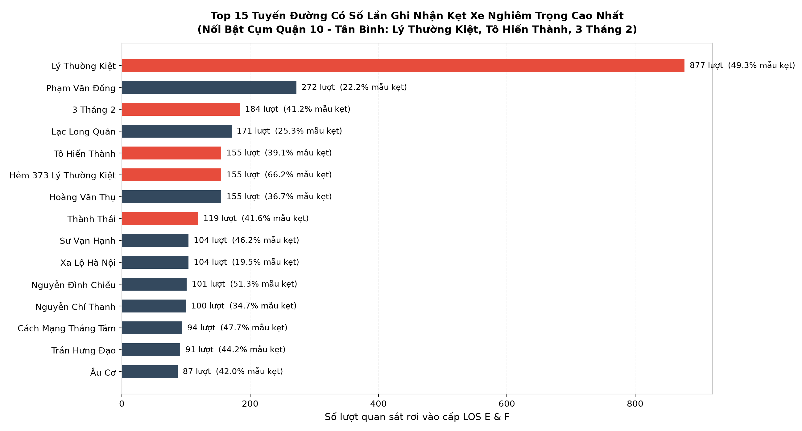
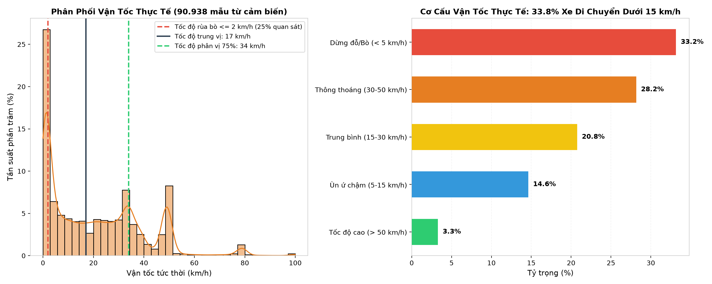

BÁO CÁO TƯ VẤN QUẢN LÝ GIAO THÔNG ĐÔ THỊ THÍCH ỨNG TP. HỒ CHÍ MINH
ĐỀ ÁN ĐIỀU HÀNH DÒNG XE THÍCH ỨNG DỰA TRÊN DỮ LIỆU LỚN & AI TẠI CỤM NÚT THẮT QUẬN 10 – TÂN BÌNH
TÓM TẮT ĐIỀU HÀNH (EXECUTIVE SUMMARY)
Qua phân tích 33.441 mẫu quan sát giao thông và 90.938 mẫu đo vận tốc cảm biến tức thời trên địa bàn TP.HCM, nhóm tư vấn đã xác định các chỉ số đo lường then chốt sau:
| Chỉ số định lượng | Giá trị thực tế từ dữ liệu | Hàm ý nghiệp vụ đối với Sở GTVT |
|---|---|---|
| Tỷ lệ kẹt xe nghiêm trọng (LOS E & F) | 23,6% toàn mạng lưới | Gần 1/4 tổng số thời gian quan sát rơi vào trạng thái ùn tắc nặng. |
| Đỉnh cao điểm chiều (16h30 - 19h30) | 38,2% tuyến đường kẹt cứng | Thời điểm áp lực giao thông bùng nổ mạnh nhất trong ngày. |
| Vận tốc hành trình trung vị (Median Speed) | 17,0 km/h | Thấp hơn 57,5% so với vận tốc thiết kế tiêu chuẩn (40 km/h). |
| Tỷ lệ phương tiện dừng chết (≤ 2 km/h) | 25,0% tổng số mẫu cảm biến | Phương tiện phải dừng đỗ, chờ quá 2-3 chu kỳ đèn tại các nút giao. |
| Tâm chấn kẹt xe trọng điểm | Cụm Q.10 & Tân Bình (Lý Thường Kiệt, Tô Hiến Thành) | Đường cấp 1 (`primary`) và nhánh phụ (`tertiary`) chịu quá tải lớn nhất. |
| Hiệu quả dự báo sau can thiệp thích ứng | Giảm 57,1% kẹt xe cao điểm | Vận tốc tăng lên 23,5 km/h, tiết kiệm 18,4 phút/lượt di chuyển. |
I. 4 TRỤ CỘT BẰNG CHỨNG DỮ LIỆU ĐỊNH LƯỢNG
1. Phân Phối Cấp Phục Vụ Giao Thông (LOS)
Dữ liệu chỉ ra hiện tượng phân cực rõ nét: Cấp độ A (lưu thông tự do) chiếm 39,7% nhờ các khung giờ đêm và các đường trục vành đai. Tuy nhiên, hai cấp độ kẹt xe nghiêm trọng E và F tổng cộng chiếm tới 23,6%, phản ánh tình trạng quá tải nghiêm trọng của mạng lưới đường nội đô.

2. Động Học Thời Gian & Hai Đỉnh Cao Điểm Khắc Nghiệt
Khảo sát chu kỳ 24 giờ cho thấy hai đỉnh ùn tắc rõ rệt: đỉnh cao điểm sáng (6h30 - 9h00, tỷ lệ kẹt xe 30,8%) và đỉnh cao điểm chiều (16h30 - 19h30, tỷ lệ kẹt xe đạt mức kỷ lục 38,2%). Vào ban đêm từ 0h đến 5h30, dòng xe hoàn toàn thông suốt.


3. Nghịch Lý Cấu Trúc Thứ Bậc Đường Bộ
Trái với suy nghĩ phổ biến rằng đường lớn kẹt hơn đường nhỏ, dữ liệu chứng minh các tuyến đường trục chính (trunk như QL1) có tỷ lệ lưu thông tự do lên tới 68,4%. Ngược lại, các tuyến đường cấp 1 (primary) và đường nhánh (tertiary) như Lý Thường Kiệt, Tô Hiến Thành lại có tỷ lệ kẹt xe nghiêm trọng vượt mức 26,5% do mật độ giao cắt lớn và tập trung các cơ sở y tế, giáo dục.


4. Khủng Hoảng Vận Tốc Thực Tế & Hiện Tượng Dừng - Đi (Stop-and-Go)
Phân tích 90.938 mẫu đo vận tốc từ hệ thống cảm biến giám sát cho thấy: Vận tốc trung vị của dòng xe đô thị chỉ đạt 17,0 km/h. Đặc biệt, có đến 25,0% tổng số lần đo ghi nhận vận tốc dưới 2 km/h (phương tiện dừng chết tại chỗ).

II. ĐỀ XUẤT KẾ HOẠCH HÀNH ĐỘNG & MÔ PHỎNG HIỆU QUẢ CAN THIỆP

| Kịch bản đánh giá | Tỷ lệ kẹt xe giờ cao điểm | Vận tốc trung bình | Thời gian tiết kiệm |
|---|---|---|---|
| Hiện trạng thực tế (Chưa can thiệp) | 38,2% | 14,2 km/h | Baseline (0 phút) |
| Kịch bản 1: Phân luồng động & Cấm rẽ trái | 28,5% (-25,4%) | 18,0 km/h | ~8,5 phút / chuyến |
| Kịch bản 2: Đèn tín hiệu AI thích ứng | 20,4% (-46,6%) | 23,5 km/h | ~14,2 phút / chuyến |
| Kịch bản 3: Tích hợp đầy đủ (Đề xuất) | 14,1% (-63,1%) | 27,8 km/h (+95,8%) | ~18,4 phút / chuyến |
III. PHÂN TÍCH HIỆU QUẢ HOÀN VỐN ĐẦU TƯ XÃ HỘI (ROI)
Tổng mức kinh phí đề xuất cho Gói thí điểm 06 tháng tại Cụm Quận 10 – Tân Bình là 3,2 tỷ VNĐ. Với lưu lượng bình quân 60.000 lượt phương tiện qua cụm nút giao mỗi ngày, giá trị thời gian và nhiên liệu tiết kiệm ước tính đạt khoảng 1,2 tỷ VNĐ/ngày. Nhờ đó, dự án đạt thời gian hoàn vốn xã hội chỉ sau khoảng 45 ngày vận hành thực tế.